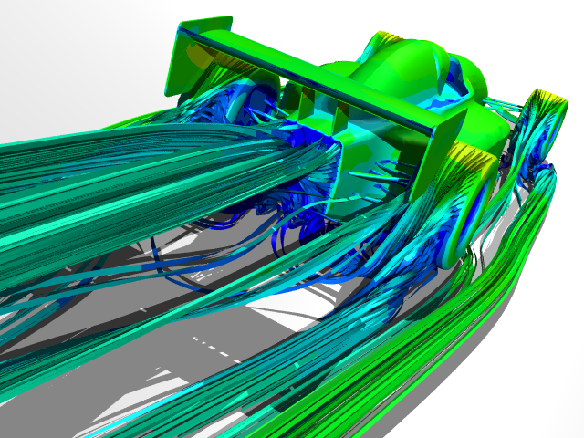

Open Wheel Race Car CFD Analysis
Open wheel race cars, such as those found in Formula 1 (F1), are characterized by complex aerodynamics. With geometry preparation, meshing, physics setup, solver control, and results extraction all combined in a single unified simulation environment, Caedium Professional is a good choice for assessing the aerodynamic performance of such cars using Computational Fluid Dynamics (CFD).
Background
The aerodynamic challenges posed by open wheel cars are due to their exposed wheels, diffusers, and the wings at the front and rear of the cars. CFD is a powerful tool that designers use (sometimes in isolation, but more often together with wind tunnels) to better understand and optimize the flow around open wheel race cars with an emphasis on predicting downforce and drag.
Geometry
An Open Cascade example file representing a generic F1-like open wheel race car was chosen as the basis for the geometry in this example simulation. Importing the race car into Caedium revealed a combination of faces and volumes.
Original Geometry
Using the various geometry creation and fixing tools in Caedium, the original geometry was modified in order to represent the volume of air surrounding the car. By assuming a symmetric car and flow field, only half of the flow volume is needed for the CFD simulation. Symmetry allows the simulation to run twice as quickly and only use half the memory that would otherwise be necessary.
Physics
The CFD simulation setup included:
- Free-stream air speed and moving-ground speed = 44.7 m/s (161 km/h or 100 mph)
- Front wheel rotation speed = 1,667 rpm
- Rear wheel rotation speed = 1,408 rpm
- k-omega SST turbulence model
The race car, its wheels, and the ground plane were specified as walls (impregnable by air). Additionally the wheels were assigned a rotational speed and the ground plane was configured with a linear speed matching the free-stream air speed. The sides and ceiling of the flow volume were specified as symmetry planes to simulate the other half of the flow volume and mimic free air. The upstream face was specified as an inlet and the downstream face was specified as an outlet.
Results
The mesh created in Caedium for this simulation contained 612,966 tetrahedral elements.
Surface Mesh
Lift and drag monitors were created to provide feedback as the simulation progressed and to determine whether the simulation was converged. These same monitors also reported the lift and drag values which are key factors in assessing the performance of a race car's aerodynamics.
Drag and Lift Monitors
Streamlines and contours were created to provide insights into the behavior of the airflow on the surface of the race car and in the wake behind it.
Velocity Magnitude Contours and Streamlines
 Closeup of Wake Streamlines
Closeup of Wake Streamlines
 Pressure Coefficient Contours
Pressure Coefficient Contours
Conclusion
This example shows how Caedium can simulate the complex air flow around an open wheel race car with rotating wheels and moving ground. Note also that this type and size of simulation is well within the capabilities of Caedium running interactively on a regular desktop or laptop computer.
Feedback
Questions? Ideas? Problems?

Comments
Update with Refined Mesh
After performing some mesh refinement studies on rotating wheels it became evident that the mesh size around the wheels in the original simulation above was inadequate. Thus another simulation was run with the mesh refined in the rear-upper-quadrant on the wheels. Also continuous wall functions were used which are more tolerant of surface cell size variation than standard wall functions.
Results
The mesh created in Caedium for this simulation contained approximately 1.2 million tetrahedral elements.
Refined Surface Mesh
The streamlines around the wheels have a larger separation zone that extends towards the top of the wheel.
The lift and drag forces remained unchanged from the original simulation.
No prisms layer?
No prisms layer?
No Prism Layers Yet
No, Caedium can not currently generate prism layers. If you require advanced meshing, such as prism layers, then contact our meshing partners Pointwise.